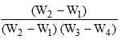

The aggregate passing through 4.75mm sieve size is called as fine aggregate. Natural sand is generally used as fine aggregate, silt and clay are also come under this category. IS specifications classify the fine aggregate into four types according to its grading as fine aggregate of grading Zone-1 to grading Zone-4. The four grading zones become progressively finer from grading Zone-1 to grading Zone-4. 90% to 100% of the fine aggregate passes 4.75 mm IS sieve and 0 to 15% passes 150 micron IS sieve depending upon its grading zone. The purpose of using fine aggregate in concrete is to fill the voids in the coarse aggregate and to act as a workability agent.
| Fine aggregate | Size variation |
|---|---|
| Coarse Sand | 2.0mm - 0.5mm |
| Medium sand | 0.5mm - 0.25mm |
| Fine sand | 0.25mm - 0.06mm |
| Silt | 0.06mm - 0.002mm |
| Clay | <0.002 |
The fine aggregate specific gravity test is used to calculate the specific gravity of a sample by determining the ratio of the weight of a given volume of aggregate to the weight of an equal volume of water.
Aggregate specific gravity is used in a number of applications including in mix design, deleterious particle identification and separation, and material property change identification etc. Generally the material's weight is typically measured and then converted to a volume based on its specific gravity. Correct and accurate material specific gravity determinations are vital to proper mix design. An incorrect specific gravity value will result in incorrectly calculated volumes and ultimately result in an incorrect mix design. Specific gravity can also indicate possible material contamination, large amount of deleterious material in an aggregate sample may result in an abnormally low specific gravity. Specific gravity differences can be used to indicate a possible material change. A change in aggregate mineral or physical properties can result in a change in specific gravity.
Specific gravity of fine aggregate=
Where,
W1= weight of the empty flask
W2= weight of the flask + 1/3rd of fine aggregate
W3=weight of the flask+1/3rd aggregate+ water
W4= weight of the flask+ water
Relevant IS Standard: IS : 2386 (PartIII)-1963: Methods of Test for Aggregates for Concrete.

Objective:
To determine the specific gravity of fine aggregates.
Steps:
- When you open specific gravity of fine aggregate simulation, a window will open as shown. Click NEXT button.

- Here select the type of the sand to test. Then click NEXT Button.

- Click on pycnometer to place it on the weighing machine to get weight (W1).

- Then click on the bottom cap first and then click on top cap to open it.

- Now click on the hand to pour sand into the pycnometer. Then click on the caps again to place it in position.

- Click on the pycnometer to place it in weighing machine to get the weight W2.Then click NEXT button.

- Repeat the same steps to pour water into it and then weigh it by clicking on pycnometer to get weight W3.

- . Measure the weight of pycnometer with water W4. then Click NEXT Button.

- Here the detailed observation will be given, now enter the calculated value of specific gravity to get the actual result.

- Repeat the same steps in further trials to get the average specific gravity of fine aggregate.


- Obtain the specific gravity range for
- Sand
- Clay
- Silt
- How the specific gravity varies with the increased silt content?


IS : 2386 (PartIII)-1963: Methods of Test for Aggregates for Concrete,1963.
IS 383-1970: Specification for Coarse and Fine Aggregates From Natural Sources For Concrete, Second revision,1970.
M.S. Shetty, Concrete Technology, S. Chand publications, 2009.
M.L. Gambhir, Concrete Technology, Tata McGraw-Hill Education, 2004.